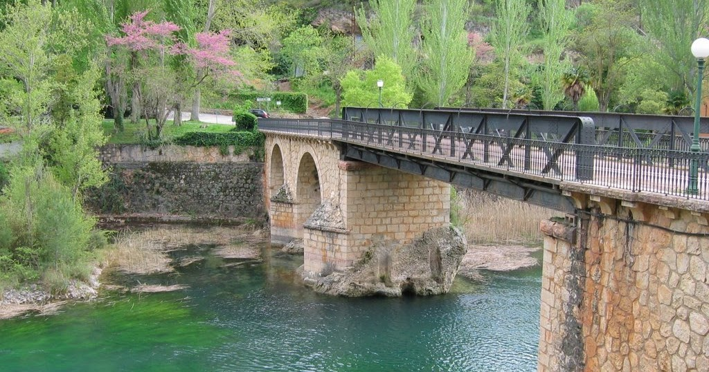

Las Chorreras de Cabriel son un tesoro natural ubicado en la provincia de Cuenca, en la región de Castilla-La Mancha, España. Este hermoso lugar es una reserva natural que te sorprenderá con su belleza y sus cristalinas pozas de agua. Rodeadas por un entorno montañoso y exuberante vegetación, las Chorreras de Cabriel son conocidas por sus impresionantes cascadas y sus aguas transparentes. Es un oasis de tranquilidad en medio de la naturaleza, donde podrás escapar del bullicio de la ciudad y sumergirte en un ambiente sereno y relajante.
Ubicado en la provincia de Guadalajara, en la comunidad autónoma de Castilla-La Mancha, España, el Salto de Bolarque es un lugar asombroso que no puedes dejar de visitar. Este lugar único te dejará sin aliento con su majestuosidad y su belleza natural. El Salto de Bolarque es un embalse situado en el curso del río Tajo, rodeado por una impresionante garganta que crea un paisaje impresionante. Sus aguas cristalinas y su entorno montañoso crean un ambiente sereno y tranquilo que te invita a desconectar y disfrutar de la naturaleza en todo su esplendor.
El Embalse de Bolarque es una maravilla natural ubicada en la provincia de Guadalajara, en la comunidad autónoma de Castilla-La Mancha, España. Este embalse, también conocido como Pantano de Bolarque, es un lugar fascinante que combina la belleza del agua con el entorno montañoso circundante. Con una extensión de agua impresionante, el Embalse de Bolarque ofrece un paisaje tranquilo y sereno. Sus aguas cristalinas y su entorno natural te invitan a disfrutar de diversas actividades al aire libre. Puedes explorar el embalse en una embarcación, ya sea en kayak, canoa o barco, y deleitarte con las vistas panorámicas de las montañas y los bosques que lo rodean.